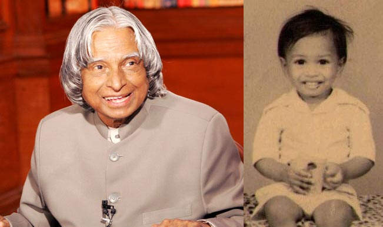
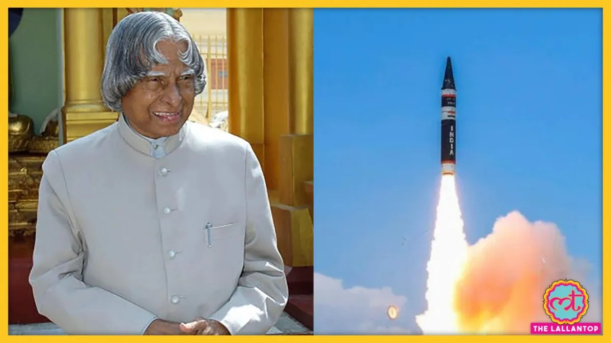

Early Life
Dr. APJ Abdul Kalam was born on October 15, 1931, in Rameswaram, Tamil Nadu, India. He came from a humble background and overcame many obstacles to become a renowned scientist and the 11th President of India.
Achievements
Dr. Kalam played a pivotal role in India's civilian space program and military missile development. He was known as the "Missile Man of India" for his contributions to the development of ballistic missile technology.
Legacy
Dr. APJ Abdul Kalam's vision, dedication, and humility continue to inspire millions of people around the world. He was a true patriot, a great scientist, and a beloved President. His books and speeches on motivation and education have left an indelible mark on the minds of young Indians.